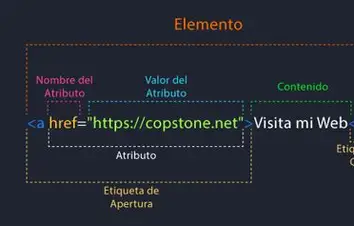
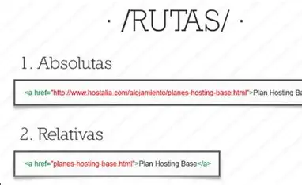
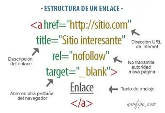

| 1. La anatomía de la etiqueta y el atributo href |
- Sintaxis básica:lo que el usuario visualiza
- Etiqueta de apertura y cierre: Es un elemento contenedor; todo lo que esté dentro de las etiquetas (texto o imágenes) se volverá "clicable".
|

|
| 2. Enlaces Absolutos vs. Relativos |
- Absoluto:Apuntar a sitios externos (incluye el protocolo https://).
- Relativo Apuntar a archivos dentro de tu propio proyecto/carpeta.
|

|
| 3. Marcadores y Enlaces de Anclaje |
- Primero, le das un "nombre" al destino
- Servicio de alojamiento para sitios web
- Luego, creas el enlace usando un hashtag:
|

|
Alumno. Marcos Antonio Viza Chable